title: Component Selection
Component Selection – GripRx Motor Board
Course: EGR 304 – Embedded Systems Design
Team: 103 – GripRx
Project: Motor Board
Overview
The purpose of this assignment is to evaluate and compare major electronic components for the GripRx Motor Board. The board uses a PIC18F57Q43 microcontroller to control a DC gear motor through an H-bridge motor driver.
The selection process considers electrical compatibility, performance, cost, power requirements, and ease of integration.
The major components evaluated are:
- DC Gear Motor
- H-Bridge Motor Driver
- 5V Voltage Regulator
- DC Power Supply
1. DC Gear Motor Selection
Table 1: DC Gear Motor Comparison
| Solution | Pros | Cons |
|---|---|---|
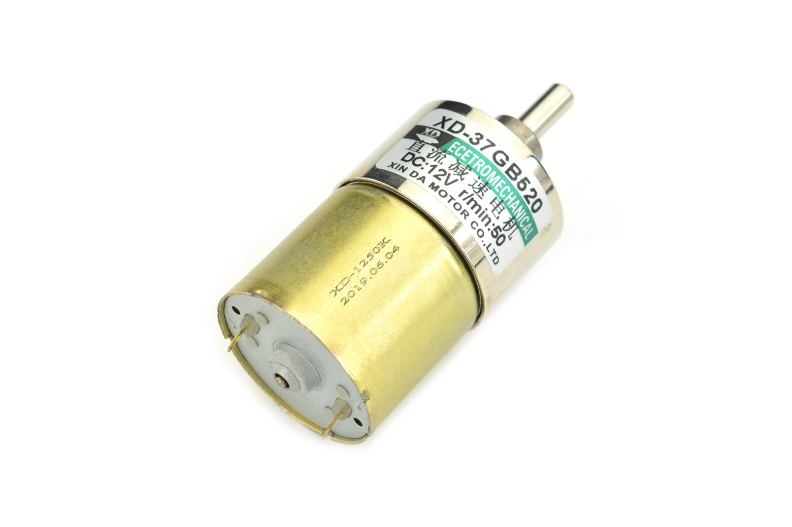 Option 1: DFRobot FIT0492-A Price: $11.90 each Voltage: 12V Speed: 50 RPM no-load Rated torque: 9 kg-cm Rated current: 0.68A Stall current: 2.19A Product Link |
- Lowest price among the compared motors - High rated torque for a geared motor - Low rotational speed suitable for controlled gripping - Metal gearbox for mechanical durability |
- Requires a 12V supply for rated performance - Stall current exceeds the 1A current-limit target in the current block diagram - Relatively heavy at 210g - No integrated position encoder |
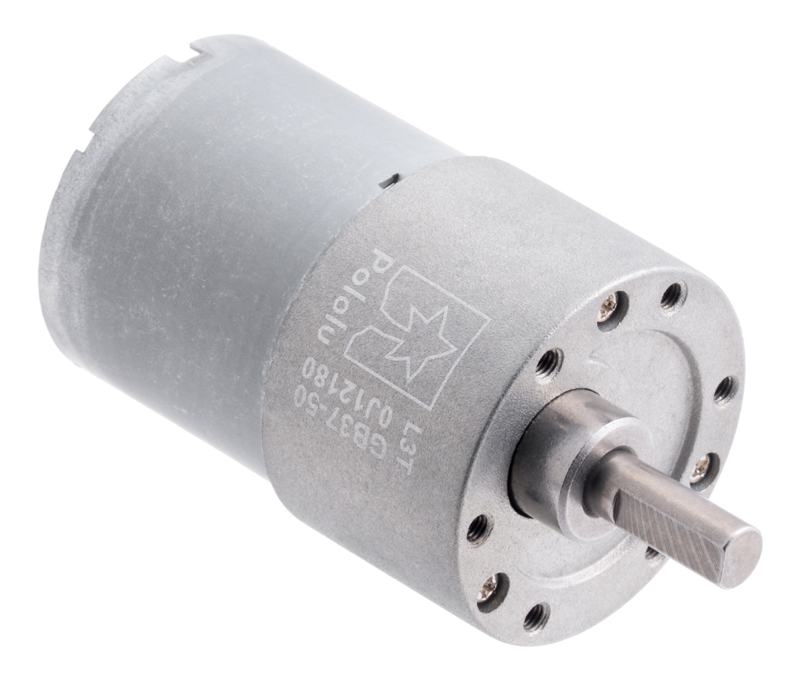 Option 2: Pololu 50:1 37D Price: $38.95 each Voltage: 12V Speed: 200 RPM no-load Stall torque: 21 kg-cm (extrapolated) Stall current: 5.5A Product Link |
- Durable metal gearbox - Higher speed for faster movement - Optional encoder-equipped version - Detailed manufacturer specifications |
- More expensive than Option 1 - High stall current requires careful driver and power-supply selection - Higher speed may require additional control for precise gripping - Extrapolated stall torque is not a recommended continuous operating torque |
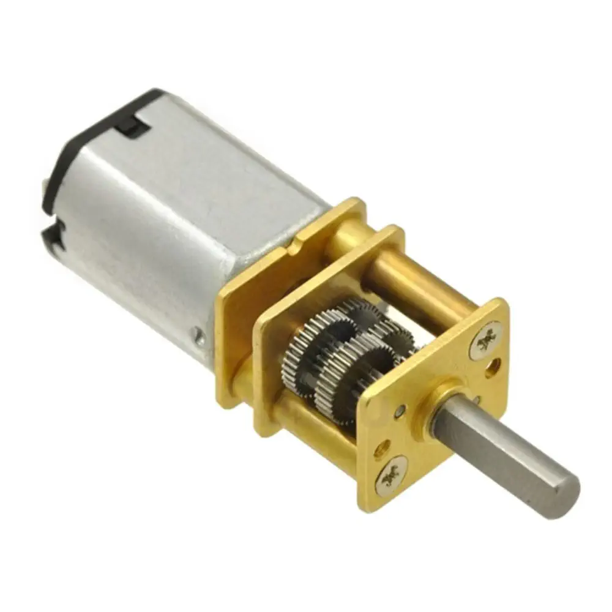 Option 3: Pololu 150:1 Micro Listed price: $26.45 each Voltage: 12V Speed: 200 RPM no-load Stall torque: approximately 2.9 kg-cm Stall current: 0.8A Product Link |
- Compact and lightweight design - Lower stall current than the other two motors - Metal gearbox - Easier to accommodate in a small mechanism |
- Much lower stall torque than the other options - May not provide enough force for the gripping mechanism - Higher no-load speed than Option 1 - More expensive than Option 1 |


Preliminary Choice: Option 1 – DFRobot FIT0492-A Metal DC Gear Motor.
Rationale: The DFRobot FIT0492-A is the preferred preliminary choice because it provides a useful combination of low output speed, substantial rated torque, and low cost. Its rated torque of 9 kg-cm and rated current of 0.68A make it a promising candidate for the GripRx gripping mechanism. The 50 RPM no-load speed may also help provide controlled opening and closing movement. Compared with the Pololu alternatives, it offers an attractive balance between torque and cost. The selected motor is rated for 12V, while the team's planned supply is 9V. Operating at 9V may reduce motor speed and available torque. The team must test the motor under expected gripping loads and verify that the proposed 1A driver current limit provides sufficient torque without causing overheating or excessive stalling. The final motor selection will be confirmed after the mechanical design is completed and the required gripping torque is calculated or measured.
Sources: - DFRobot FIT0492-A Manufacturer Specifications - Pololu 50:1 Metal Gearmotor Specifications - Pololu 150:1 Micro Metal Gearmotor Listing
2. H-Bridge Motor Driver Selection
Table 2: H-Bridge Motor Driver Comparison
The GripRx Motor Board requires an H-bridge driver to control the direction and speed of a brushed DC gear motor. The driver must support PWM control, operate with the motor supply voltage, and provide adequate current handling and protection against motor startup and stall conditions.
| Solution | Pros | Cons |
|---|---|---|
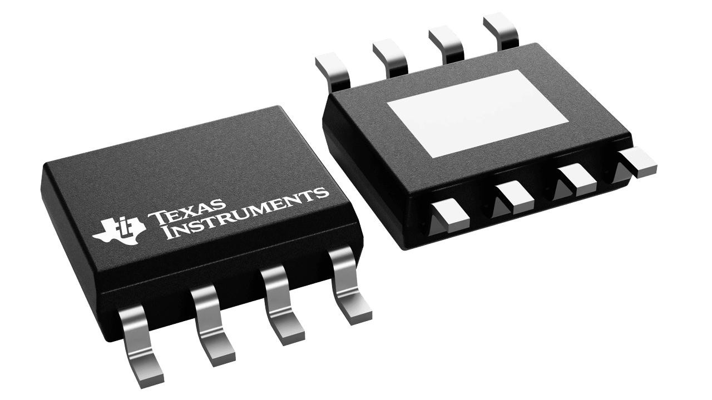 Option 1: Texas Instruments DRV8871DDAR Approximate price: $2.90 each Supply voltage: 6.5–45V Peak output current: 3.6A Package: 8-pin HSOP Product Link |
- Supports bidirectional brushed DC motor control - Supports PWM speed control - Adjustable current regulation using an external resistor - Integrated overcurrent and thermal protection - Relatively simple two-input interface |
- Current limit must be configured correctly - Thermal design limits continuous current - Does not provide the same current feedback capabilities as Option 3 - Current block diagram may need changes to the current-limit setting |
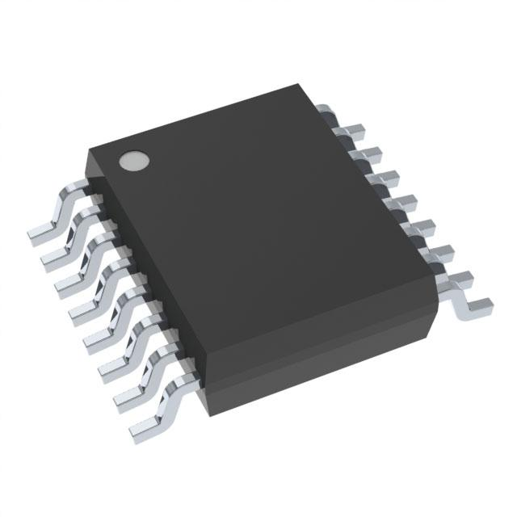 Option 2: Texas Instruments DRV8876PWPR Approximate price: $1.95 each Supply voltage: 4.5–37V Peak output current: 3.5A Package: 16-pin HTSSOP Product Link |
- Lowest estimated unit price - Integrated current sensing and regulation - Supports PWM motor control - Compatible with 3.3V and 5V logic - Integrated fault protection |
- More pins and control configurations - Requires careful PCB layout and thermal design - Additional configuration may increase circuit complexity - Not a direct pin-compatible replacement for the DRV8871 |
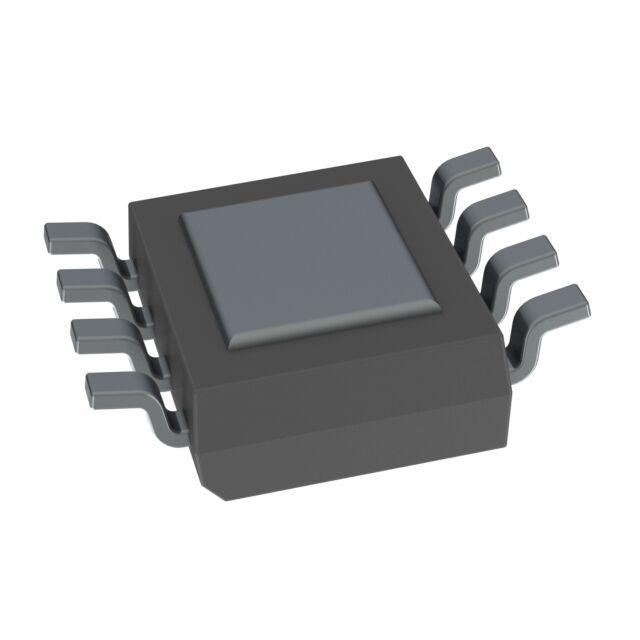 Option 3: Texas Instruments DRV8251ADDAR Approximate price: $2.40 each Minimum supply voltage: 4.5V Absolute maximum supply voltage: 50V Peak output current: 4.1A Package: 8-pin HSOP Product Link |
- Highest specified peak current among the options - Integrated current sensing and regulation - Current feedback may support stall detection - Supports common microcontroller logic levels - Integrated thermal and overcurrent protection - Compact package |
- Requires configuration of current regulation - Thermal performance must be verified - Motor current must remain within safe operating limits - Requires verification of the control interface |


Selected Component: Option 1 – Texas Instruments DRV8871DDAR.
Rationale: The DRV8871DDAR was selected for the GripRx Motor Board because it supports bidirectional brushed DC motor control, PWM speed control, and adjustable current regulation using an external resistor.
The driver operates over a supply voltage range of 6.5V to 45V, making it compatible with the team's planned 9V DC power supply. Its integrated protection features also make it suitable for motor-control applications.
The team currently proposes a 1A motor current limit. However, the selected DFRobot FIT0492-A motor has a specified stall current of approximately 2.19A at its rated voltage. The current-limit setting must therefore be verified through calculations and testing to ensure adequate gripping torque.
The DRV8871DDAR matches the team's updated block diagram and will be used for the motor board schematic and PCB design. Sources: - Texas Instruments DRV8871 Product Information - Texas Instruments DRV8876 Product Information - Texas Instruments DRV8251A Product Information
3. Voltage Regulator Selection
Table 3: 5V Voltage Regulator Comparison
The GripRx Motor Board requires a regulated 5V power supply for its control and interface electronics. A voltage regulator is needed to convert the main DC power supply voltage into a stable 5V output. Three regulators were compared based on output voltage, current capacity, efficiency, thermal performance, cost, and circuit complexity.
| Solution | Pros | Cons |
|---|---|---|
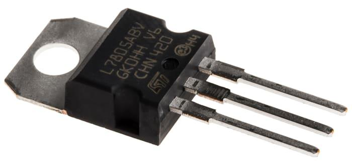 Option 1: STMicroelectronics L7805ABV-DG Example unit price: $1.62 Output voltage: 5V Maximum rated output current: 1.5A Maximum input voltage: 35V Type: Linear regulator Package: TO-220-3 Product Link Supplier Link |
- Simple circuit design - Fixed 5V output - Low switching noise because it is a linear regulator - Integrated thermal and short-circuit protection - Already included in the team's preliminary design - Common TO-220 package |
- Dissipates significant heat when input voltage is much higher than 5V - May require a heatsink - Lower efficiency than a switching regulator - Output current capability is limited by thermal conditions |
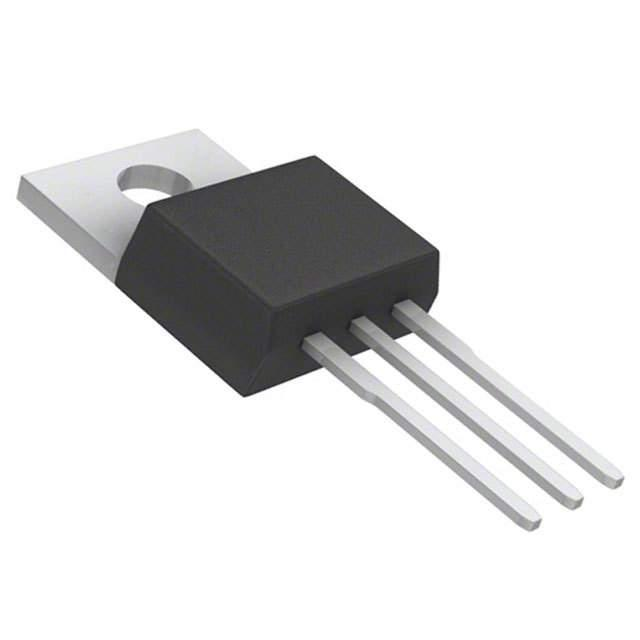 Option 2: Texas Instruments LM7805CT/NOPB Price: $1.86 Output voltage: 5V Maximum rated output current: 1.5A Type: Linear regulator Package: TO-220-3 Product Link Supplier Link |
- Simple fixed 5V regulation - Integrated thermal and short-circuit protection - Low switching noise - Common three-terminal package - Similar functionality to Option 1 |
- Produces heat when stepping down from 9V or 12V - May require additional cooling - Lower efficiency than a buck regulator - Offers limited advantages over the team's original selection |
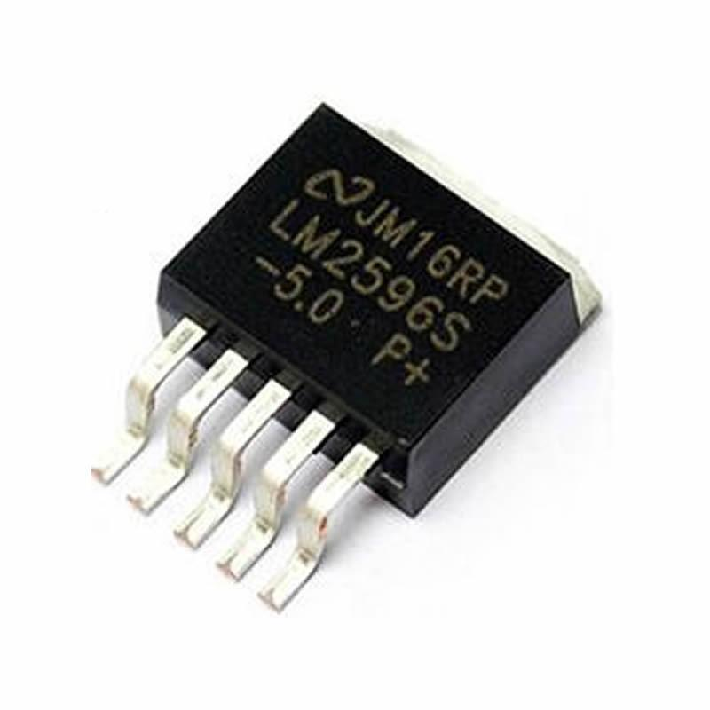 Option 3: Texas Instruments LM2596S-5.0/NOPB Example unit price: $8.30 Output voltage: 5V Rated output current: 3A Input voltage: Up to 40V; check datasheet for required headroom Type: Buck switching regulator Switching frequency: 150kHz Package: TO-263 Product Link Supplier Link |
- More efficient than linear regulators for large voltage reductions - Reduced power dissipation at moderate and high load currents - Higher rated output current - Integrated thermal and current-limit protection - Suitable for generating 5V from a higher DC voltage |
- Requires an external inductor, diode, and capacitors - More complex PCB layout - Produces switching noise - Higher total circuit complexity and component count - Must be laid out carefully to minimize electrical noise |


Preliminary Choice: Option 1 – STMicroelectronics L7805ABV-DG.
Rationale: The STMicroelectronics L7805ABV-DG is the preferred preliminary voltage regulator because it is already included in the team's design and provides a simple method of generating a regulated 5V supply. Its fixed output voltage, integrated protection features, and straightforward circuit requirements make it a practical choice for the GripRx Motor Board.
However, the regulator's thermal performance must be evaluated before final selection. Linear regulators dissipate power equal to the voltage difference between the input and output multiplied by the load current:
P = (Vin - Vout) x Iout
For example, with a 9V input, 5V output, and 0.5A load:
P = (9V - 5V) x 0.5A = 2W
This represents significant heat dissipation and may require a heatsink or an alternative regulator design.
The LM2596 switching regulator is a promising alternative because it can generate 5V more efficiently at higher current loads. However, it requires additional components and more careful PCB layout.
The final regulator choice will depend on the total current required by the 5V electronics, the finalized input supply voltage, the available PCB space, and the thermal requirements. The team must verify that the regulator can safely provide the necessary output current without overheating.
Sources: - STMicroelectronics L78 Product Information - STMicroelectronics L78 Datasheet - Texas Instruments LM7805 Product Information - Texas Instruments LM2596 Product Information - L7805ABV-DG Supplier Listing - LM7805CT/NOPB Supplier Listing - LM2596S-5.0/NOPB Supplier Listing
4. Power Supply Selection
Table 4: DC Power Supply Comparison
The GripRx Motor Board requires a DC power supply capable of powering the motor driver, DC gear motor, and 5V regulation circuitry. The selected DFRobot FIT0492-A motor is rated for 12V, while the team's original power supply proposal was a 9V, 3A adapter. Three power supply options were compared based on voltage compatibility, current capacity, power rating, cost, and ease of integration.
| Solution | Pros | Cons |
|---|---|---|
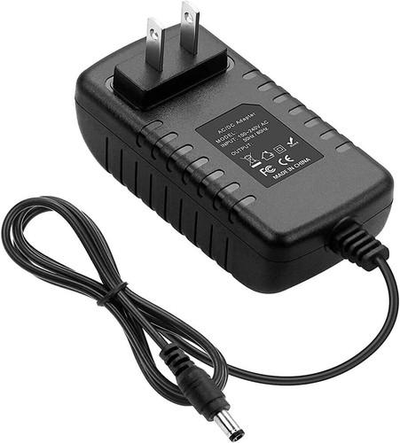 Option 1: 9V 3A Universal DC Power Adapter – Newegg Listed price: $34.18 (verify current price) Output voltage: 9V DC Maximum output current: 3A Maximum output power: 27W Type: AC/DC wall adapter Connector: Interchangeable barrel tips; verify dimensions and polarity Product Link |
- Matches the team's originally proposed 9V and 3A supply specifications - Provides a nominal 27W output capacity - External adapter avoids placing AC mains circuitry on the PCB - Interchangeable tips provide flexibility when connecting different devices |
- Output voltage is below the motor's rated 12V - Motor may operate at reduced speed and torque - Exact connector dimensions and polarity must be verified - Higher listed cost than the other compared supplies - Manufacturer datasheet has not been confirmed |
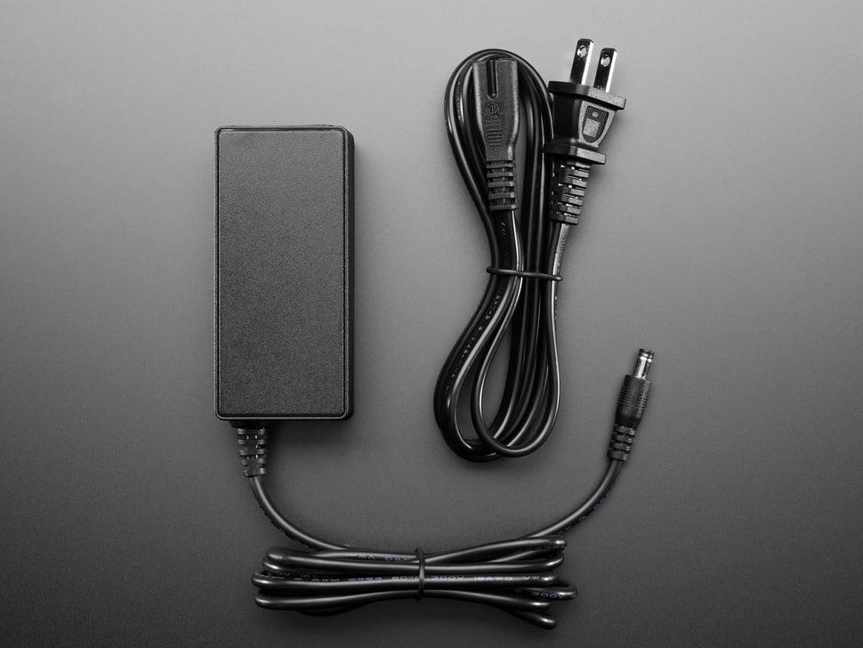 Option 2: Adafruit 12V 5A Switching Power Supply Listed price: $24.95 Output voltage: 12V DC Maximum output current: 5A Maximum output power: 60W AC input: 110–220V Connector: 5.5mm outer / 2.1mm inner barrel plug Product Link |
- Matches the motor's rated 12V supply - Provides additional current capacity for motor startup and other circuitry - Fixed output voltage avoids adjustment errors - External switching supply - Documented product specifications and connector dimensions |
- Higher listed price - Larger supply than may be necessary - Connector and polarity must match the board - Additional current capacity does not replace motor current limiting - The 5V regulator must be checked for heat dissipation |
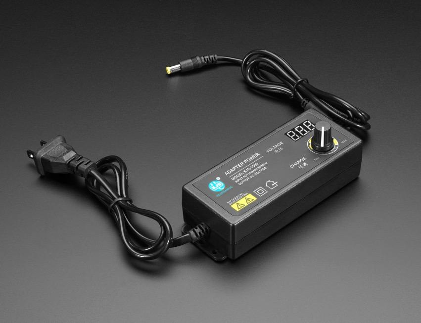 Option 3: Adafruit Adjustable 3–12V 5A Power Supply Listed price: $17.50 Output voltage: Adjustable from 3V to 12V DC Maximum rated output current: 5A Maximum rated output power at 12V: 60W AC input: 100–240V Connector: 5.5mm / 2.1mm barrel plug Product Link |
- Can be adjusted to the motor's rated 12V - Useful for testing at different motor supply voltages - Provides additional current capacity - Lower listed price than Option 2 - Suitable for laboratory development |
- Adjustable voltage introduces risk of incorrect settings - Voltage should be measured before connecting the board - Less convenient than a fixed-voltage supply for a final product - Connector and polarity must be checked - Motor current regulation remains necessary |


Selected Power Supply: 9V DC, 3A Wall Adapter – BestCH.
Rationale: The GripRx Motor Board will use a 9V DC power supply with a maximum output current of 3A. This supply matches the team's updated block diagram and will be provided by the professor.
The 9V supply will power the motor driver and provide input power to the 5V voltage regulator.
Although the selected DFRobot FIT0492-A motor is rated for 12V, the team plans to operate it at 9V. Operating below its rated voltage may reduce the motor's speed and available torque. Testing will be required to confirm that sufficient gripping force can be achieved.
The maximum rated output power is calculated using:
P = V x I
P = 9V x 3A = 27W
This represents the maximum rated output capacity of the power supply, not the actual power consumed by the motor board.
Before finalizing the circuit, the team must verify the provided adapter's connector dimensions, polarity, voltage regulation, and compatibility with the motor board.
Sources: - 9V 3A Power Adapter – Newegg - Adafruit 12V 5A Switching Power Supply - Adafruit Adjustable 3–12V 5A Power Supply - Adafruit Power Supply Guide
Final Component Selection Summary
After comparing three alternatives for each major component, the following components were identified as the preliminary selections for the GripRx Motor Board. The selections were based on electrical specifications, compatibility, cost, functionality, and suitability for the proposed gripping mechanism.
Table 5: Final Component Selection Summary
| Component | Preliminary Selection | Key Specifications | Reason for Selection |
|---|---|---|---|
| DC Gear Motor | DFRobot FIT0492-A | 12V DC; approximately 2.19A stall current | Provides geared motor operation suitable for the proposed gripping mechanism. Final suitability depends on the required gripping torque and speed. |
| H-Bridge Motor Driver | Texas Instruments DRV8871DDAR | 6.5–45V supply; 3.6A peak output current; adjustable current regulation | Supports bidirectional motor control and PWM operation while matching the team's updated block diagram. |
| 5V Voltage Regulator | STMicroelectronics L7805ABV-DG | Fixed 5V output; 1.5A rated output current | Provides a simple method of generating a regulated 5V supply and is already included in the team's preliminary design. |
| DC Power Supply | 9V 3A DC Wall Adapter – Best CH | 9V DC; 3A maximum output current; 27W maximum rated output power | Matches the team's planned motor board power configuration. |
Overall Design Considerations
The selected components provide the planned electrical configuration for the GripRx Motor Board. The 9V DC power supply will power the motor driver and provide input power to the 5V linear regulator.
Several design considerations must be addressed before finalizing the circuit:
-
Motor Requirements: The DFRobot FIT0492-A is rated for 12V but will initially operate from the team's 9V supply. The available gripping torque and operating speed must be verified through testing.
-
Motor Driver Compatibility: The Texas Instruments DRV8871DDAR is the selected H-bridge driver and matches the updated block diagram. The PIC18F57Q43 will control the driver through PWM and direction signals.
-
Current Protection: The motor has a specified stall current of approximately 2.19A at its rated voltage. The proposed 1A driver current limit must be verified to ensure sufficient motor torque while maintaining safe operating conditions.
-
Voltage Regulation: The L7805ABV-DG will generate the required 5V supply from the 9V input. Its thermal performance must be evaluated based on the actual current drawn by the 5V electronics.
-
Power Supply Compatibility: The motor board will use a 9V DC, 3A wall adapter provided by the professor. The team must verify the connector, polarity, output specifications, and electrical protection before connecting the board.
Conclusion
The selected components for the GripRx Motor Board are the DFRobot FIT0492-A gear motor, Texas Instruments DRV8871DDAR motor driver, STMicroelectronics L7805ABV-DG voltage regulator, and a 9V 3A DC wall adapter provided by the professor.
These components match the team's updated block diagram and establish the planned configuration for schematic development, PCB design, and testing. Final electrical and mechanical performance must still be verified.